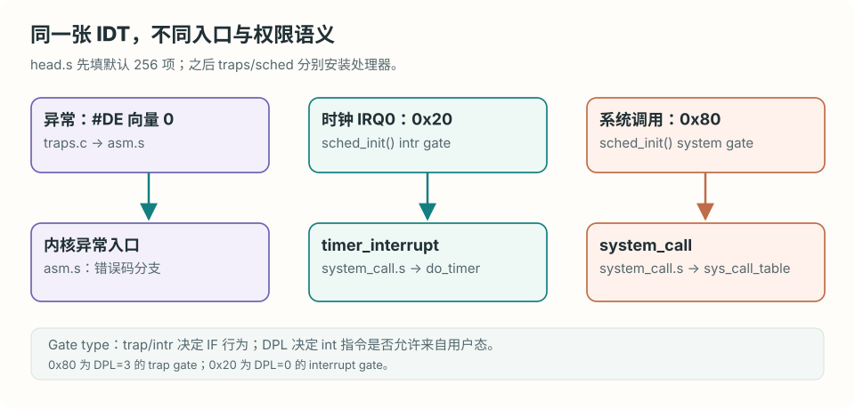
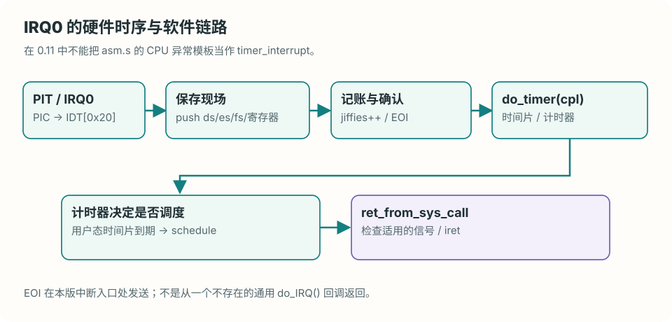

中断与异常：IDT 的三条不同执行路径
用除零异常、IRQ0 和 int 0x80 比较处理器陷入内核的时序，明确各自的门权限、入栈规则及软件处理入口。
IDT · IRQ0 · 异常为什么不是所有中断都经过 do_IRQ？
想象 CPU 正在执行用户程序：一条除零指令产生异常；定时器向 8259A 送来 IRQ0；另一个程序主动执行 int 0x80。它们最终都利用 IDT 找到内核入口，但来源、门类型、可触发权限和后续处理代码均不同。
现有资料常把三者都画成 kernel/asm.s → do_IRQ()。对 Linux 0.11 来说这是错误的：kernel/asm.s 主要处理 CPU 故障与异常；定时器与系统调用入口实际位于 kernel/system_call.s，而 0.11 并不存在本文旧代码展示的通用 _do_IRQ 路径。

IDT 是一张内存表，不是 BIOS 向量表
进入 32 位保护模式后，处理器使用 IDTR 保存当前 IDT 基地址和界限。Linux 0.11 的 head.s 在 setup_idt 中把 256 个 8 字节表项先填成默认的 ignore_int interrupt gate，之后执行 lidt idt_descr。这张表位于链接器布局中的 _idt 符号处，不是可以直接说成固定物理地址零。
entry_size = 8 bytes
entry_count = 256
IDTR.base = address_of(_idt)
IDTR.limit = 256 * 8 - 1 # 2047
default_handler = ignore_int之后 trap_init()、sched_init() 以及设备初始化代码逐一覆盖需要的 IDT 表项。因此“初始化一张默认 IDT”和“装好真正的异常/设备处理程序”是不同阶段；它们之间也解释了为什么 sti() 要等到后面才执行。
为什么不能直接说 IDT 位于物理 0 地址？（点击展开解析）
0x00000 在 head.s 中用于早期页目录。IDT 的实际位置由 _idt 标签决定，IDTR 加载的是 idt_descr 指向的表地址；固定写成 0 会和源码中的链接符号相矛盾。
trap gate、interrupt gate、system gate 差在哪里
asm/system.h 定义了三组宏：set_intr_gate(n,addr)（type 14，DPL 0）、set_trap_gate(n,addr)（type 15，DPL 0）、set_system_gate(n,addr)（type 15，DPL 3）。interrupt gate 进入后硬件会清 IF，trap gate 不会清 IF；对显式 int n 的访问还要检查门的 DPL。
| 事件 | 向量 | 典型门 | 实际接收者 |
|---|---|---|---|
| 除零 #DE | 0x00 | trap gate / DPL 0 | asm.s 异常包装 |
| 时钟 IRQ0 | 0x20 | interrupt gate / DPL 0 | system_call.s 的 timer_interrupt |
| 系统调用 | 0x80 | trap gate / DPL 3 | system_call.s 的 system_call |
8259A 为什么要重新映射 IRQ？
传统 PC 的 8259A 主/从片将外部中断转换成 CPU IDT 向量号。Linux 0.11 在 setup.s 中重新编程 PIC，让硬件 IRQ 映射到 0x20–0x2F，避开 CPU 保留的 0x00–0x1F 异常范围。比如定时器 IRQ0 变成 0x20，而不是和 #DF 等异常向量冲突。
grep -n '0x20\|0x28\|0xA0\|0x21' boot/setup.s
grep -n 'set_intr_gate(0x20\|set_system_gate(0x80' kernel/sched.c
grep -n '_timer_interrupt\|_jiffies\|_do_timer' kernel/system_call.s8259A 还需要 EOI（End of Interrupt）以清除正在服务的 IRQ 状态。0.11 的 _timer_interrupt 会写入主片命令端口 0x20。如果漏发确认，后续同类中断可能无法按预期继续到达——这是可从 PIC 协议解释的失效模式，而不是本教程已经复现出的实际错误。
逐条追踪一次 IRQ0
当时钟 IRQ0 经 IDT 0x20 进入内核，_timer_interrupt 保存 DS/ES/FS 和部分通用寄存器，切换到内核数据段，并让 FS 指向用户数据段。它在汇编层执行 incl _jiffies，向 PIC 发送 EOI，然后根据保存在返回现场里的 CS 计算 CPL（0 或 3），把它作为参数传给 do_timer(cpl)。

如果用户态时间片已经耗尽，do_timer 可以引发 schedule()。返回路径借用 ret_from_sys_call 的栈帧布局，必要时判断待处理信号，然后恢复寄存器并使用 iret。这是时钟和系统调用共享的一段代码，不等于所有设备中断都按此方式处理信号。
为什么第 10 章不能把 jiffies++ 写到 do_timer 函数体里？（点击展开解析）
因为此版本的计数器递增位于 kernel/system_call.s::_timer_interrupt 的 incl _jiffies。do_timer() 负责使用 tick 引发的事件与 counter，但不直接增加 jiffies。
异常入口还要区分有无硬件错误码
kernel/asm.s 的 _divide_error 把 C 层函数地址交给 no_error_code，软件为没有 CPU 硬件错误码的异常补一个占位错误码。相反，某些保护异常使用 error_code 路径，按照 CPU 已经压入错误码的栈形态整理参数。把两种栈帧画成完全一样，会导致返回时栈偏移错误。
_divide_error: -> no_error_code -> _do_divide_error
_general_protection: -> error_code -> _do_general_protection
# page fault (#PF) -> mm/page.s -> C 缺页处理
# 不是所有异常都通过 asm.s 的同一个标签页故障是额外的特例：CR2 提供发生缺页的线性地址，mm/page.s 负责其低级入口，最终进入内存管理代码。它不是 8259 的外部 IRQ，当然也不需要向 PIC 发送 EOI。
不启动旧系统也能验证的三个问题
在解压的 v0.11 源码树里，分别检索 head.s 的 setup_idt、sched.c 的 set_intr_gate(0x20...) 和 system_call.s 的 _timer_interrupt。预测结果应该是：默认表创建、真实门安装、实际 IRQ0 入口位于三个不同的位置。这种静态核对不等于已复现硬件中断；如果需要实际实验，应在隔离的模拟器中用断点确认这三个阶段。
为什么 0x80 的 trap gate 要 DPL 3？（点击展开解析）
因为用户态需要用 int 0x80 主动调用系统调用门。若按照 DPL 0 安装，CPL 3 的软件 int 无权通过此门进入内核。
原始证据
- boot/head.s：默认 IDT、256 个 ignore_int 门。
- include/asm/system.h：interrupt/trap/system 三种 gate 宏的类型与 DPL。
- boot/setup.s：将 8259 IRQ 重新映射到 0x20–0x2F。
- kernel/asm.s：处理器异常入口、无/有错误码的区别。
- kernel/system_call.s：时钟入口、EOI、jiffies 与共享返回路径。
- kernel/sched.c：时钟门与系统调用门的实际安装。
下一章把 int 0x80 放大成一个真实执行图：它保存了哪些寄存器，如何检查系统调用号，以及如何把返回值送回用户态？